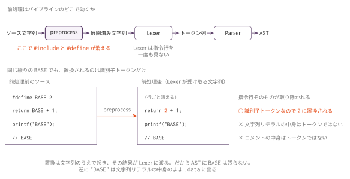
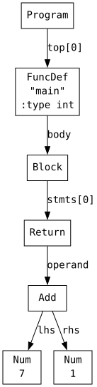
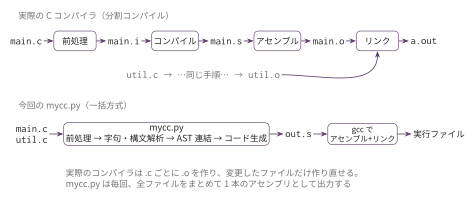

コマ14: 複数ファイル・前処理の概念
今日のゴール
#include "file.h" や #define NAME value を含む入力を扱い、複数 .c ファイルをまとめてコンパイルできるようにする。
コマ13までで、グローバル変数とローカル変数を使った標準的なプログラムはコンパイルできるようになった。 この回では、プログラムを複数のファイルに分割できるようにする。
/* math_util.h */
int my_abs(int x);
int my_pow(int base, int exp);
/* math_util.c */
int my_abs(int x) {
if (x < 0) return -x;
return x;
}
int my_pow(int base, int exp) {
int result;
int i;
result = 1;
for (i = 0; i < exp; i = i + 1) {
result = result * base;
}
return result;
}
/* main.c */
#include "math_util.h"
#define BASE 2
int main() {
return my_pow(BASE, 3);
}この回で扱う範囲
対象にする機能は次の通り。
| 種類 | 例 |
|---|---|
#include |
#include "math_util.h" |
#define |
#define BASE 2 |
| 複数ファイル | python3 mycc.py main.c math_util.c |
| 関数プロトタイプ | int f(int x); |
この回では、#define は単純な定数置換だけを扱う。
関数形式マクロや条件コンパイルは扱わない。
この回までの言語仕様（EBNF）
構文（型・トップレベル・関数・文・式・字句トークン）はコマ13 で最終形に到達しており、
この回で増えるのは前処理指令だけである。したがってここでは差分だけを示す。
最終形の全体は
language_spec.md の「形式文法（EBNF）」を参照。
include_dir ::= '#' 'include' '"' FILENAME '"' NEWLINE
define_dir ::= '#' 'define' IDENT { TOKEN } NEWLINEinclude_dir の形そのものはコマ9 から変わっていない。変わったのは対象で、
提供物の lib.h だけでなく自作ヘッダも書けるようになり、取込みの入れ子も許される。
define_dir がこの回の新規である。
FILENAME は " と改行を除く1文字以上の文字列、{ TOKEN } は改行までのトークン列（0個以上）である。
指令行（行頭の # から改行まで）は構文解析より前に処理されるため、上の2規則以外には現れない。
これで、この講義で作るコンパイラが受理する言語は最終形と一致する。
前処理とは何か
C コンパイラは、ソースコードの字句解析に入る前に前処理を行う。
講義のスキャフォールドに含まれている preprocess() 関数がこれにあたる。
前処理が行うのは、主に次の2つである。
#include はファイル内容の展開
#include "math_util.h"この行は、math_util.h の内容で置き換えられる。
たとえば math_util.h に int my_abs(int x); と書いてあれば、前処理後のソースにはその内容が埋め込まれる。
#define はトークン列に入る前の置換
#define BASE 2
int main() {
return BASE + 1;
}前処理後は、BASE が 2 に置き換えられる。
したがって、コンパイラが受け取るのは return 2 + 1; である。
置き換わるのはトークンとしての識別子だけである。
文字列リテラル "BASE"、文字リテラル 'B'、行コメント // BASE の中身は
文字として同じ綴りでもトークンではないので、置換されない。

前処理は字句解析より前に文字列のうえで働くので、Lexer は指令行を一度も見ない。
AST を確認する: #define
#define の置換結果が AST でどう見えるか確認する。
python3 scaffold/parse_viewer.py sessions/14_preprocess_multifile/tests/define_min.cこのプログラムの内容は次の通り。
#define N 7
int main() {
return N + 1;
}実行すると、次のようなS式が表示される。
(program
(funcdef "main" :type int (params)
(block
(return
(add (num 7) (num 1))))))
N は AST には出てこない。前処理の段階で 7 に置き換えられているためである。
AST から見ると、最初から 7 と書いてあったのと同じになる。
複数ファイルのコンパイル
コマ13までは、プログラムは1つの .c ファイルに収まっていた。
コマ14では、複数の .c ファイルを読み込み、すべての AST を1つにまとめてアセンブリを出力する。
実際の C コンパイラの手順
実際の C コンパイラは、次の4段階で処理を行う。
| 段階 | 作業 | 出力 |
|---|---|---|
| preprocess | #include / #define を展開 |
前処理済み .i ファイル |
| compile | 前処理済みソースをアセンブリに変換 | .s ファイル |
| assemble | アセンブリをオブジェクトファイルに変換 | .o ファイル |
| link | 複数の .o ファイルを結合 |
実行ファイル |
各 .c ファイルは別々にコンパイルされ、最後にリンカがまとめる。
この仕組みにより、一部のファイルだけ再コンパイルすることができる。
今回の簡易方式
今回のコンパイラでは、複数ファイルを扱うにあたり、次の簡易的な方式をとる。
- 指定された全
.cファイルを読み込む - 各ファイルの AST を1つのリストにまとめる
- 全体のグローバル変数を集める
- 全体の文字列リテラルを集める
.data/.bss/.textを出力する
python3 mycc.py main.c math_util.cこの方式では、関数定義の重複チェックなどは行わない。 また、実際の分割コンパイルのように、変更のあったファイルだけ再コンパイルする仕組みもない。 しかし、複数ファイルに分割したプログラムを動かすことはできる。

関数プロトタイプと定義
別ファイルにある関数を呼び出すには、呼び出し側のファイルで関数プロトタイプを宣言する必要がある。
/* main.c */
int my_abs(int x);
int main() {
return my_abs(-7);
}関数プロトタイプ int my_abs(int x); は、AST 上は 'FuncProto' ノードになる。
これは「こういう関数がある」という宣言であり、コードは生成しない。
実際のコードは 'FuncDef' ノードだけが対象となる。
したがって、コンパイラのコード生成ループでは、'FuncDef' ノードだけを処理する。
for node in prog:
if node.kind == 'FuncDef':
self.gen_func(node)編集するファイル
sessions/14_preprocess_multifile/ 以下のスケルトンファイルを編集する。
| ファイル | 実装するハンドラ・メソッド |
|---|---|
mycc.py |
Codegen14 クラス（Codegen13 を継承）。新規実装するのは複数ファイル対応の main() のみ。parse_file() クラスメソッドと collect_all_strings() はコマ13で提供済みなので、継承してそのまま使う |
| (AST パーサ) | 変更不要（'FuncProto' ノードは既に存在する） |
実装手順
- コマ13の実装を
sessions/14_preprocess_multifile/mycc.pyに反映する
（スケルトンのimportlib継承により、前回のCodegen13クラスを継承する。新機能の handler だけを実装すればよい。） main()で、コマンドライン引数に指定された全.cファイルに対して、コマ13で提供済みのCodegen14.parse_file()を呼び、AST リストを連結するself.collect_globals()を全ファイルの AST に対して適用する- コマ13で実装済みの
self.collect_all_strings()も全ファイルの AST に対して適用する .textセクションでは'FuncDef'だけを処理するdefine_constants.c、multifile_math.c、multifile_global.cを通す
tests/
| ファイル | 内容 | 期待値 |
|---|---|---|
define_min.c |
#define 1個だけの最小形 |
8 |
define_constants.c |
#define の定数置換 |
12 |
define_literal_guard.c |
文字列・文字リテラル・コメント内は置換しない | 71 |
multifile_math.c |
複数ファイル + #include + #define |
64 |
multifile_global.c |
複数ファイル + グローバル変数共有 | 63 |
複数ファイルのテストは、一緒にコンパイルする .c を同名の .files に書いてある。
| ファイル | 役割 |
|---|---|
math_util.c / math_util.h |
multifile_math.c から使う関数と、そのプロトタイプ |
stat_lib.c / stat_lib.h |
multifile_global.c から使う関数と、そのプロトタイプ（グローバル変数は stat_lib.c 側にある） |
テスト
python3 scaffold/test_runner.py sessions/14_preprocess_multifiletests/define_min.c がコンパイルでき、終了コード 8 になれば基本形は成功。
個別に動かす場合は、次のようにする。
python3 sessions/14_preprocess_multifile/mycc.py sessions/14_preprocess_multifile/tests/define_min.c \
| riscv64-linux-gnu-gcc -x assembler -static - -o out
qemu-riscv64 ./out
echo $?複数ファイルのテストは、.files に書かれた .c を並べて渡す。
python3 sessions/14_preprocess_multifile/mycc.py \
sessions/14_preprocess_multifile/tests/multifile_math.c \
sessions/14_preprocess_multifile/tests/math_util.c \
| riscv64-linux-gnu-gcc -x assembler -static - -o out
qemu-riscv64 ./out
echo $?注意
#define は単純な定数置換だけを扱う。関数形式マクロ（#define MAX(a,b) ...）や
条件コンパイル（#ifdef など）は扱わない。
置換は前処理の段階で終わるので、#define した名前は AST に残らない。
define_min.c の N は、最初から 7 と書いてあったのと同じ AST になる。
#include は "..." 形式だけを扱う。展開するのは宣言だけで、
ヘッダに関数定義を書くと、そのヘッダを読んだファイルの数だけ定義が重複する。
複数ファイルは、全ファイルの AST を1つにまとめてから一度にアセンブリを出力する。 関数定義の重複チェックは行わないので、同名の関数を2つ書くと同じラベルが2回出る。
グローバル変数と文字列リテラルの収集は、全ファイルの AST をまとめてから行う。
ファイルごとに .bss / .data を出すと、同じ変数が二重に定義される。
複数ファイルをまとめた結果のアセンブリを1命令ずつ確認したいときは、RV64 シミュレータ に貼り付ける。
この回の完成形に相当する OCaml 版参考実装が ../../workbook/ocaml/README.md にある。完成相当の実装なので、まず自分の実装方針を検討してから確認すること。